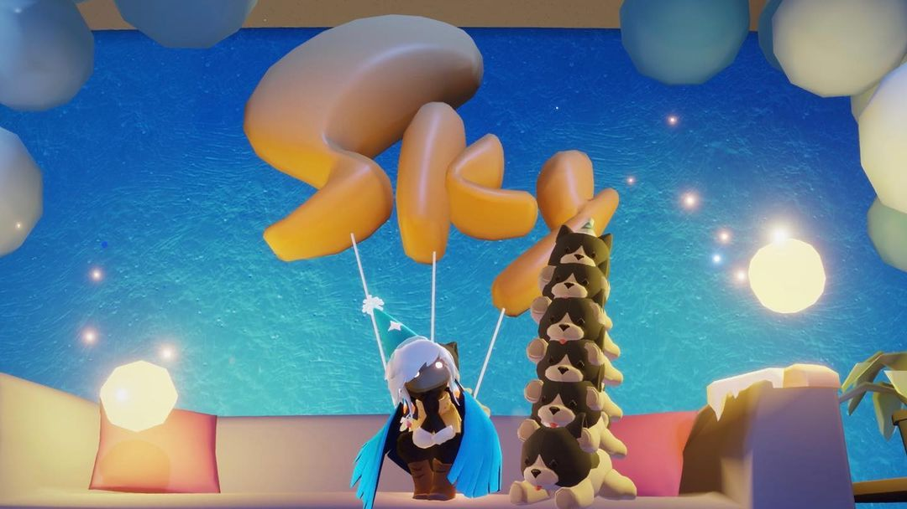
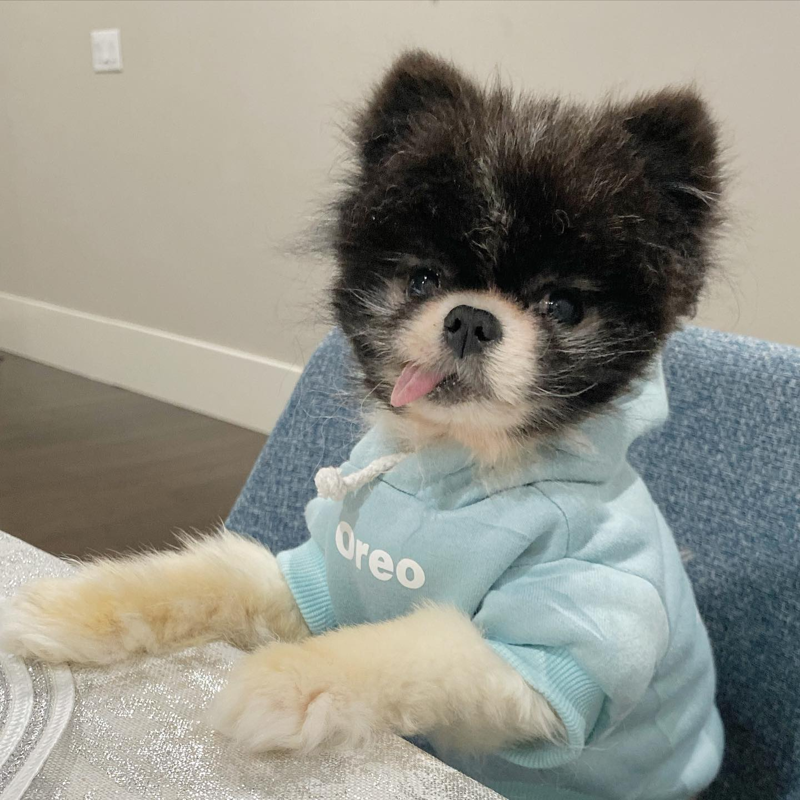
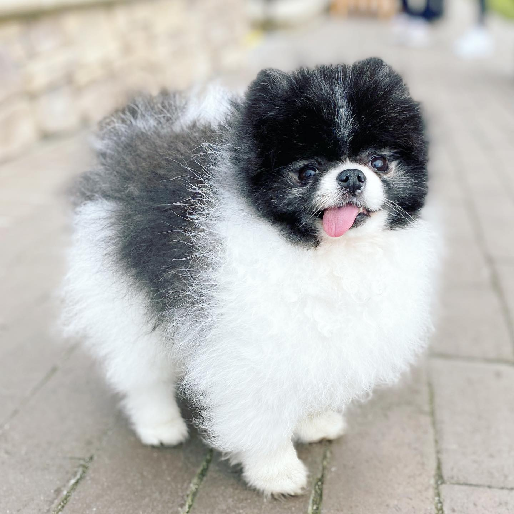

Oreo es un perro blanco y negro que solo pueden invocar siete jugadores que posean la expresión de mariposa del Encantador de mariposas Oreo permanece en el espacio hasta que el jugador se va o mientras los jugadores permanezcan en el área. Los jugadores tendrán que desbloquear Oreo nuevamente por siete jugadores para volver a verlo en su próxima visita. 
 Oreo es el perro que vive en el estudio TGC, tiene ya varios años que esta en las instalaciones, Oreo tiene presencia el juego de Sky desde items de paga para decoracion de los avatares hasta artitulos de venta real. 